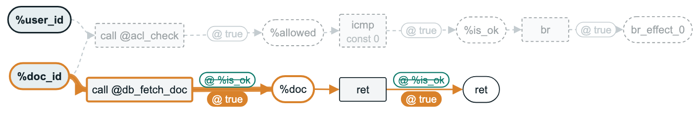

Changes in the Guard
Bugs are a lack of program-level sanitization. If every value flow carries the check that guards it, a patch that removes a check becomes a visible difference between two graphs, with a witness path.
Abstract
Software changes constantly, and patches keep introducing vulnerabilities. Many of them have one shape: a patch removes or weakens a check, and an attacker gains authority that was previously out of reach. The question an analyst asks of such a diff is not “is there a bug?” but “what can I do now that I could not before, and along which path?” Bug detectors match shapes in one version; taint trackers report that data reaches a sensitive operation but keep the check beside the query, not in the program. Neither can name the check a patch removed.
We introduce Guarded Flow Paths (GFP), in which every value flow carries the branch conditions under which it happens, so a check is a label on the path from an input to the operation that uses it. A checker names a source, a sensitive operation, and the condition under which that operation becomes a violation: the same integer may select an address, a write length, or a record, and the operand it reaches says which. One reachability query answers every checker. Differential authority analysis runs that query on both sides of a patch and reports the authority gained or lost: which sensitive operations an input can now reach, and which guard protected each path before. Our intra-procedural prototype, AuthDiff, lifts LLVM IR into GFP; on a worked example it reports nine newly unconditioned source/endpoint pairs with thirteen witness paths, and seventeen written checkers span CWE and OWASP classes on synthetic examples and one OpenSSL excerpt.
What the difference looks like

diff output on the
document-fetch fixture (a synthetic minimal LLVM-IR model). Before the patch, the fetch and the return were
guarded by @ %is_ok (struck through); after it they hold @ true. The orange edges
are the newly unguarded witness path from %doc_id; the grey chain is the deleted access check.
Try it
Interactive viewer
The viewer is one self-contained HTML file that works offline. It draws only parsed prototype output for the talk's fixtures, in three views:
- 1 GFP: the Guarded Flow Paths of one version (before or after; b/a), every edge labelled with the condition it runs under.
- 2 Spec: a written checker specification (source, sensitive operation, violation condition). The view shows the specification; it does not evaluate it.
- 3 Differential: the source/endpoint pairs that are newly unguarded after the patch, with their witness paths.
| 1 2 3 | switch view: graph · spec · differential |
| b / a | graph view: before / after the patch |
| f | next example (heartbeat model ↔ document fetch) |
| w | differential view: highlight the next witness path (or click a witness line) |
Open the viewer, then use the keys. Laid out for a desktop-size screen.
Demo
One command compares the two sides of a patch:
duc-proto diff before.ll after.ll
Recorded output of case 1 (document fetch: an ownership check is deleted), verbatim:
1 · Document fetch: an ownership check is deleted
fixture OW-03 · paper §2
- if (!acl_check(user_id, doc_id)) {
- return NULL;
- }
return db_fetch_doc(doc_id);
Before the patch: what governs the fetch?
$ duc-proto normalize broken_access_control_safe.ll | grep 'db_fetch_doc'
def %doc <- call(@db_fetch_doc, %doc_id) @ %is_ok
What can an input reach now, unguarded, that it couldn't before?
$ duc-proto diff broken_access_control_safe.ll broken_access_control.ll
@get_document:
NEW capability paths (introduced in after):
+ %doc_id -> %doc
%doc_id --[true]--> %doc
+ %doc_id -> ret
%doc_id --[true]--> %doc --[true]--> ret
All four recorded cases: 1 document fetch ·
2 heartbeat · 3 ping endpoint ·
4 integer dispatch. The live script, run-demo.sh,
needs the DUC v2 prototype binary (duc-proto) and its test fixtures, located by DUC_ROOT;
without them, read the recorded outputs.
Scope. The prototype is intra-procedural. The examples are mostly synthetic minimal LLVM-IR models patterned on real vulnerabilities, plus one real OpenSSL function. The checker specifications are written; their automatic evaluation is planned.
BibTeX
@inproceedings{dautenhahn2026changes,
author = {Dautenhahn, Nathan and Bratus, Sergey},
title = {Changes in the Guard: Detecting Authority-Exposing Patches
with Differential Guarded Flow Paths},
booktitle = {2nd Workshop on Software Understanding and Reverse
Engineering (SURE '26)},
year = {2026},
month = nov,
address = {The Hague, Netherlands},
publisher = {ACM},
isbn = {979-8-4007-3019-1},
doi = {10.1145/3847158.3847387},
url = {https://doi.org/10.1145/3847158.3847387}
}